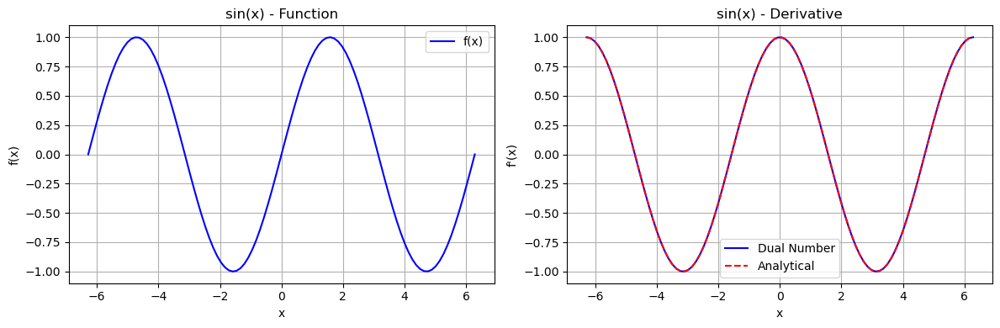
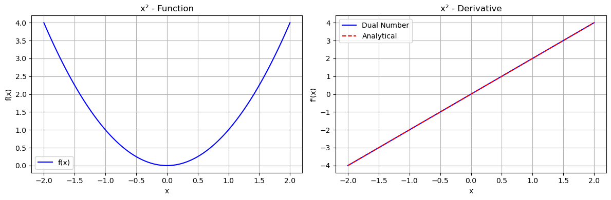
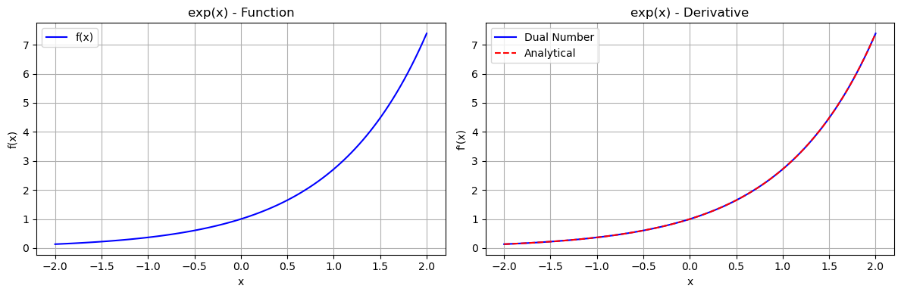
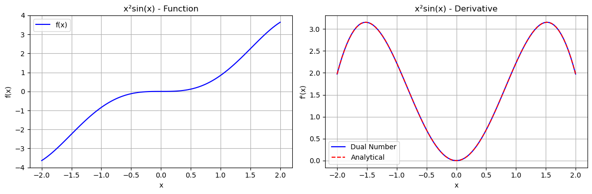
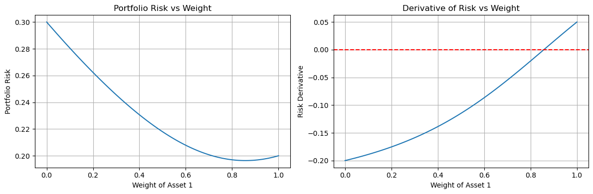

Dual Number Automatic Differentiation - A Gentle Introduction
This tutorial demonstrates how to use the dual_autodiff package for automatic differentiation using dual numbers.
Table of Contents
Understanding Dual Numbers
Getting Started
Basic Operations
Computing Derivatives
Real-World Application
Understanding Dual Numbers
Think of dual numbers as an extension of real numbers, similar to how complex numbers work. While complex numbers have a real part and an imaginary part with i² = -1, dual numbers have:
A real part (a), A dual part (b), A dual unit (ε) where ε² = 0
For example: 2 + 3ε is a dual number where: 2 is the real part, 3 is the dual part, ε is the dual unit
The magic happens when we use these numbers for differentiation - the dual part automatically gives us the derivative!
Getting Started
First, let’s import some useful notebooks.
[1]:
import numpy as np
import matplotlib.pyplot as plt
from dual_autodiff import Dual
Intel MKL WARNING: Support of Intel(R) Streaming SIMD Extensions 4.2 (Intel(R) SSE4.2) enabled only processors has been deprecated. Intel oneAPI Math Kernel Library 2025.0 will require Intel(R) Advanced Vector Extensions (Intel(R) AVX) instructions.
Intel MKL WARNING: Support of Intel(R) Streaming SIMD Extensions 4.2 (Intel(R) SSE4.2) enabled only processors has been deprecated. Intel oneAPI Math Kernel Library 2025.0 will require Intel(R) Advanced Vector Extensions (Intel(R) AVX) instructions.
Basic Operations
Let’s explore how dual numbers work with basic arithmetic. Think of these operations as building blocks for more complex calculations.
[2]:
x=Dual(1,2) #1+2ε
y=Dual(3,4) #3+4ε
#Let's see what happens when we perform basic operations
print(f"Starting Values:")
print(f"x={x.real}+{x.dual}ε")
print(f"y={y.real}+{y.dual}ε")
print(f"Addition: x+y={(x+y).real}+{(x+y).dual}ε")
print(f"Subtraction: x-y={(y-x).real}+{(y-x).dual}ε")
print(f"Multiplication: x*y={(x*y).real}+{(x*y).dual}ε")
print(f"Division: x/y={(x/y).real:.2g}+{(x/y).dual:.2g}ε")
Starting Values:
x=1.0+2.0ε
y=3.0+4.0ε
Addition: x+y=4.0+6.0ε
Subtraction: x-y=2.0+2.0ε
Multiplication: x*y=3.0+10.0ε
Division: x/y=0.33+0.22ε
Computing Derivatives
Now for the exciting part - computing derivatives! We’ll look at some common functions and compare our results with known analytical solutions.
You can use dual number operations on numbers to calculate the value of f(x) while also calculating f’(x) at the same time.
We will start with the function
and we will calculate f(4) and f’(4).
The first thing we do is convert our 4 into a dual number, using 1 for the dual component, since we are plugging it in for the value of x, which has a derivative of 1.
Next, we want to multiply that by the constant 3, using 0 for the dual component since it is just a constant (and the derivative of a constant is 0)
Lastly, we need to add the constant 2, using 0 again for the dual component since it’s just a constant.
In our result, the real number component (14) is the value of f(4) and the dual component (3) is the derivative f’(4), which is correct if you work it out!
We’ve created a helper function that shows both the original function and its derivative:
[3]:
def plot_function_and_derivative(f, f_prime, x_range, title):
"""
Plots a function and its derivative using both dual numbers and analytical methods.
Parameters:
f: The function to differentiate (should handle both Dual and float inputs)
f_prime: The known analytical derivative (takes float input)
x_range: Tuple of (min_x, max_x) for plotting range
title: Title for the plot
Example:
>>> # Plot sin(x) and its derivative
>>> plot_function_and_derivative(
... lambda x: x.sin() if isinstance(x, Dual) else np.sin(x),
... lambda x: np.cos(x),
... [-2*np.pi, 2*np.pi],
... 'sin(x)'
... )
"""
# Create array of x values for plotting
x = np.linspace(x_range[0], x_range[1], 100)
# Calculate function values
y = [f(xi) for xi in x]
# Compute derivatives using both methods
derivatives_dual = [f(Dual(xi, 1.0)).dual for xi in x] # Dual number method
derivatives_analytical = [f_prime(xi) for xi in x] # Analytical method
# Create subplot figure
fig, (ax1, ax2) = plt.subplots(1, 2, figsize=(12, 4))
# Left subplot: Original function
ax1.plot(x, y, 'b-', label='f(x)')
ax1.set_title(f'{title} - Function')
ax1.set_xlabel('x')
ax1.set_ylabel('f(x)')
ax1.grid(True)
ax1.legend()
# Right subplot: Derivatives
ax2.plot(x, derivatives_dual, 'b-', label='Dual Number')
ax2.plot(x, derivatives_analytical, 'r--', label='Analytical')
ax2.set_title(f'{title} - Derivative')
ax2.set_xlabel('x')
ax2.set_ylabel("f'(x)")
ax2.grid(True)
ax2.legend()
# Adjust layout and display
plt.tight_layout()
plt.show()
Sine Function
[4]:
plot_function_and_derivative(
lambda x: x.sin() if isinstance(x, Dual) else np.sin(x),
lambda x: np.cos(x),
[-2*np.pi, 2*np.pi],
'sin(x)'
)

[5]:
# Example 2: Plotting x²
plot_function_and_derivative(
lambda x: x * x,
lambda x: 2*x,
[-2, 2],
'x²'
)

[6]:
# Example 3: Plotting exp(x)
plot_function_and_derivative(
lambda x: x.exp() if isinstance(x, Dual) else np.exp(x),
lambda x: np.exp(x),
[-2, 2],
'exp(x)'
)

[7]:
# Example 4: More complex function: x²sin(x)
def complex_function(x):
if isinstance(x, Dual):
return x * x * x.sin()
return x**2 * np.sin(x)
def complex_derivative(x):
return 2*x*np.sin(x) + x**2*np.cos(x)
[8]:
plot_function_and_derivative(
complex_function,
complex_derivative,
[-2, 2],
'x²sin(x)'
)

Real-World Application: Portfolio Optimization
Problem Description
When managing an investment portfolio with two assets, investors need to find the optimal balance between them to minimize risk. Let’s demonstrate how dual numbers can help us find this optimal allocation.
The Mathematical Model:
The portfolio risk formula is given by:
risk = √(w²σ₁² + (1-w)²σ₂² + 2w(1-w)σ₁σ₂ρ)
where: - w is the weight of the first asset (0 to 1) - σ₁ is the volatility of asset 1 - σ₂ is the volatility of asset 2 - ρ is the correlation between assets
Let’s implement this with real numbers:
[9]:
def portfolio_risk(w,volatility1,volatility2,correlation):
"""
Calculate the risk of a portfolio with two assets.
Parameters:
w: Array of weights for each asset
volatility1: Volatility of asset 1
volatility2: Volatility of asset 2
correlation: Correlation between assets
Returns:
The portfolio risk
"""
# Calculate the portfolio volatility
if isinstance(w, Dual):
return (w * w * volatility1**2 +
(1-w) * (1-w) * volatility2**2 +
2 * w * (1-w) * volatility1 * volatility2 * correlation).sqrt()
# Handle regular number inputs
return np.sqrt(w**2 * volatility1**2 +
(1-w)**2 * volatility2**2 +
2 * w * (1-w) * volatility1 * volatility2 * correlation)
[10]:
# Example portfolio parameters
vol1 = 0.20
vol2 = 0.30
corr = 0.50
[11]:
weights = np.linspace(0, 1, 100) # 100 points from 0% to 100%
risks = [portfolio_risk(w, vol1, vol2, corr) for w in weights]
[12]:
risk_derivatives = [portfolio_risk(Dual(w, 1.0), vol1, vol2, corr).dual
for w in weights]
Understand the result:
When weight = 0:
Portfolio consists entirely of Asset 2 Risk = 30% (volatility of Asset 2)
When weight=1:
Portfolio consists entirely of Asset 1 Risk = 20% (volatility of Asset 1)
Optimal weight (where derivative = 0):
[13]:
optimal_idx = np.argmin(np.abs(risk_derivatives))
optimal_weight = weights[optimal_idx]
minimum_risk = risks[optimal_idx]
print(f"Optimal weight for Asset 1: {optimal_weight:.2f}")
print(f"Minimum portfolio risk: {minimum_risk:.4f}")
Optimal weight for Asset 1: 0.86
Minimum portfolio risk: 0.1964
Visualization:
We will create two plots side by side:
Risk Plot:
X-axis: Weight of Asset 1 (0 to 1)
Y-axis: Portfolio Risk
Shows how risk changes with different allocations The minimum point indicates optimal allocation
Derivative Plot:
X-axis: Weight of Asset 1 (0 to 1)
Y-axis: Derivative of Risk Where line crosses zero = optimal allocation
Negative slope means risk decreasing
Positive slope means risk increasing
[14]:
fig, (ax1, ax2) = plt.subplots(1, 2, figsize=(12, 4))
# Risk plot
ax1.plot(weights, risks)
ax1.set_title('Portfolio Risk vs Weight')
ax1.set_xlabel('Weight of Asset 1')
ax1.set_ylabel('Portfolio Risk')
ax1.grid(True)
# Derivative plot
ax2.plot(weights, risk_derivatives)
ax2.set_title('Derivative of Risk vs Weight')
ax2.set_xlabel('Weight of Asset 1')
ax2.set_ylabel('Risk Derivative')
ax2.axhline(y=0, color='r', linestyle='--')
ax2.grid(True)
plt.tight_layout()
plt.show()
